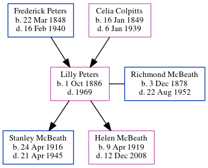

Lilly Victoria McBeath (née Peters) 1886 - 1969
[ Home ] | [ Calendar ] | [ Surnames Index ] | [ Census Index ] | [ Family History ]The child of Frederick Peters (a miller) and Celia Colpitts, Lilly Peters, the third cousin twice-removed on the father's side of Nigel Horne, was born in New Brunswick, Canada on Oct 1, 18861,2,3,4,5 and married her cousin on her father's side Richmond McBeath (with whom she had 2 children: Stanley Leigh and Helen Mae) in Richibucto, Kent, New Brunswick on Apr 6, 19156.
During her life, she was living in Richibucto, Kent, New Brunswick in 18911 and in 19012; in Kent, New Brunswick, Canada in 19113 (the same place as her father had been living in 1881); and in Richibucto, New Brunswick on Jun 1, 19214 (the same place as her mother had been living in 1901).
She died in 19695 and was buried in Rexton, New Brunswick after 19695.
Parents
- Frederick Smallwood was born on Mar 22, 1848
- Celia Ann was born on Jan 16, 1849
Children
- Stanley Leigh was born on Apr 24, 1916
- Helen Mae was born on Apr 9, 1919
Citations
- 1891 Census of Canada Ancestry.com Operations Inc (Marital Status: SingleRelation to Head of House: Fille)
- 1901 Census of Canada Ancestry.com Operations Inc (Marital Status: SingleRelation to Head of House: Daughter)
- 1911 Census of Canada Online publication - Provo, UT, USA: Ancestry.com Operations Inc, 2006. .Original data - Library and Archives Canada. Census of Canada, 1911. Ottawa, Ontario, Canada: Library and Archives Canada, 2007. http://www.collectionscanada.gc.ca/databases/census-19 (Marital Status: SingleRelation to Head of House: Daughter)
- 1921 Census of Canada Ancestry.com Operations Inc (Marital Status: MarriedRelation to Head of House: Spouse)
- Canada, Find A Grave Index, 1600s-Current Ancestry.com Operations, Inc.
- Acadia, Canada, Vital and Church Records (Drouin Collection), 1670-1946 Ancestry.com Operations Inc
- Canada Census 1911 - Findmypast (was the daughter of the head of the household)
Media
Canada Census 1911 - CAN/CENSUS/1911/01307420
Family Tree
Generated by ged2site. Last updated on Jun 11, 2024